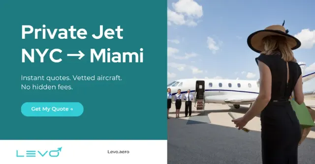
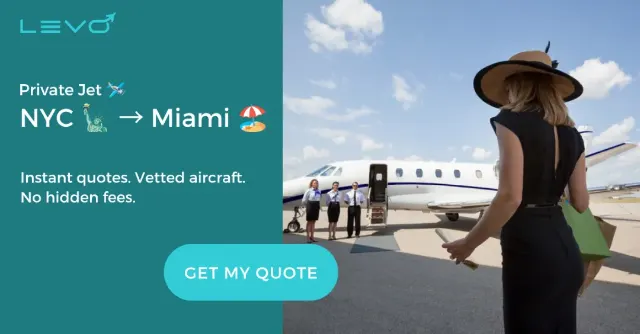
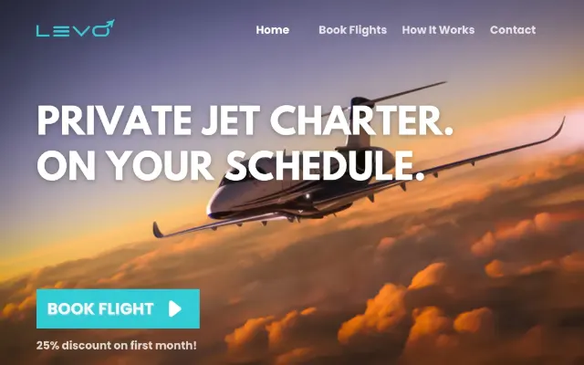

Finding
Conversion-value adjustments and purchase-tracking warnings made reported efficiency a priority to validate. Business inquiries also needed a defined lead conversion.
← Selected work / Paid Advertising
I reviewed paid-search performance for Axe & Kindle and Every Window, then developed a paid-acquisition plan for Levo Aero. The work connects measurement, search intent, landing pages and campaign priorities.



These brands had different paid-media questions. Axe & Kindle needed a review of account measurement and campaign efficiency. Every Window needed to connect campaign reports with its store and configurator funnel. Levo needed an acquisition plan and a clear set of launch prerequisites.
The shared challenge: decide what to fix or test before committing more media spend.
The deliverables were an account audit, a reporting-based campaign analysis and a paid-acquisition growth plan. Each identified priorities, dependencies and measures for evaluating the next step.
Sources: my Axe & Kindle Google Ads Audit (Oct 26, 2026; account period Sep 26–Oct 25); Every Window Google Ads Analysis (Oct 28, 2026; campaign period Sep 28–Oct 27, with separate funnel and monthly comparison periods); Levo Paid Ads Growth Plan (website review dated Oct 28, 2026). Historical findings describe those reviews, not the current state of the accounts or websites.
Portfolio summaries of my October 2026 recommendations, followed by existing Levo creative concepts. These are examples of analysis and planning, not a record of campaign improvements.
Google Ads account audit · View-only · Oct 26, 2026
Conversion-value adjustments and purchase-tracking warnings made reported efficiency a priority to validate. Business inquiries also needed a defined lead conversion.
Confirm whether value adjustments are intentional, review purchase event data and add contact-form lead measurement before testing a business-buyer campaign.
Validated purchase values and event counts; successful test lead submissions; purchase efficiency and cost per qualified inquiry after approved changes.
GA4/Data Studio report + monthly comparison sheet · Oct 28, 2026
Campaign efficiency varied, while Google Ads, GA4 and store reports showed different conversion counts. Quote and configurator activity needed clearer measurement.
Request account access to inspect branded search, search terms and conversion settings; review lower-efficiency campaigns; connect quote, call and cart-recovery paths to reporting.
Reconciled conversion definitions; branded CPC and conversion efficiency; qualified quotes and calls; cart-to-order rate. Account-level recommendations remain subject to verification.
Paid Ads Growth Plan · Proposed strategy · Oct 28, 2026
Operators, brokers and travelers needed different messages and conversion paths. The plan identified measurement and website prerequisites before a paid launch.
Validate tracking and sign-up/demo paths, research keyword demand, then test operator and broker Search campaigns with LinkedIn support. Introduce remarketing when its prerequisites are met.
Qualified operator demo requests, broker sign-ups, landing-page conversion rate and cost per qualified lead. Establish baselines from actual campaign data before setting performance targets.
Existing portfolio creative for Levo. Shown as design examples alongside the proposed acquisition strategy; these concepts do not demonstrate that a campaign launched or produced results.